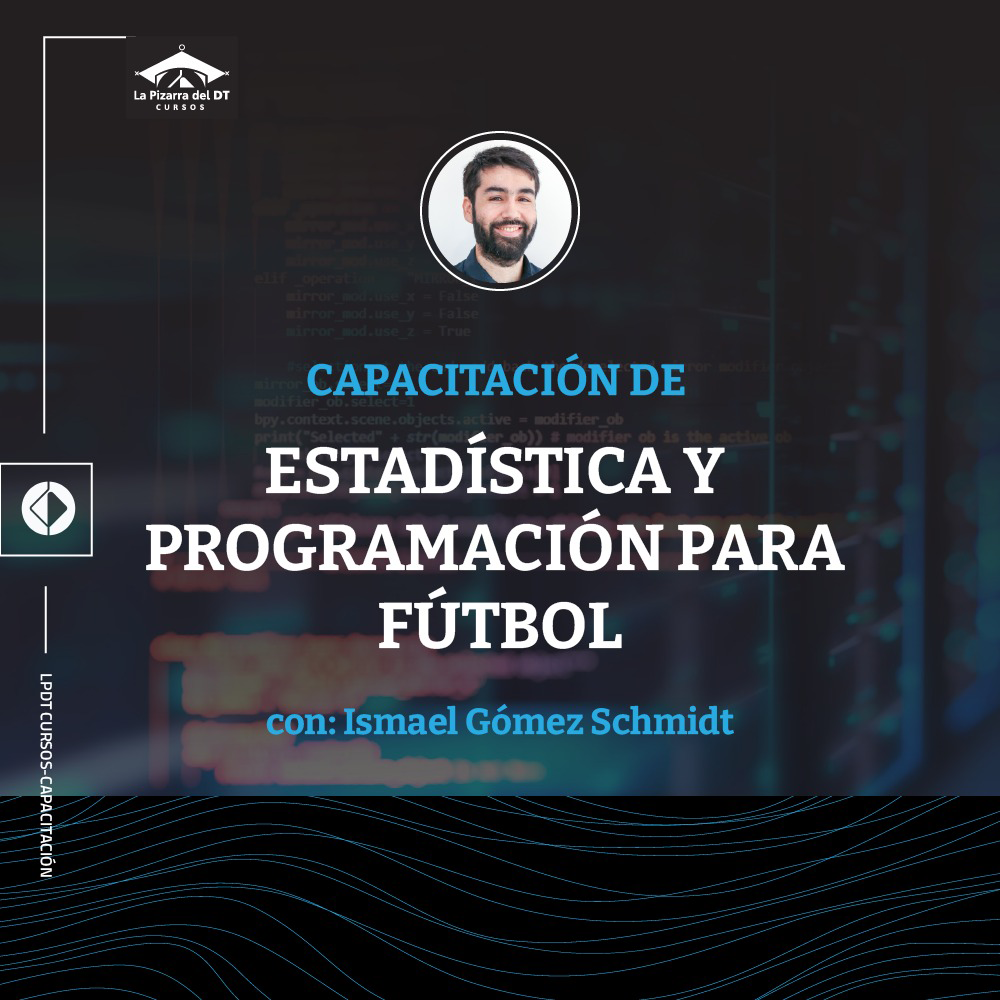

Hola!
Te cuento que hace unos días lanzamos el curso online "Capacitación en estadística y programación para fútbol" junto con los muchachos de La Pizarra del DT.
Se trata de un curso ideal para profesionales que no tienen una formación en matemáticas o informática, como por ejemplo profesionales del fútbol o periodistas que quieran empezar su camino en el área de analítica deportiva.
Si tienes ganas de empezar pero no sabes cómo ni dónde, esta opción puede ser para ti.
El curso cuenta con 6 módulos donde repasamos conceptos básicos de estadística (media, mediana, distribución, percentiles, correlación, regresión lineal simple, etc.) y una introducción a la programación con lenguaje R usando su IDE RStudio y los principales paquetes de la suite tidyverse.
Además de las sesiones de video, el estudiante recibe todo el material exclusivo utilizado: diapositivas, ejercicios, código y datos. Todo con el objetivo de llevar a la práctica lo aprendido desde el inicio.
Y solo por 50 USD!
Si estás interesado, en este link puedes acceder al formulario de inscripción y a otros detalles. También puedes escribirme a ismaelgomezs@gmail.com.